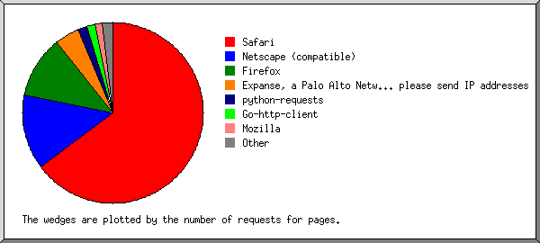
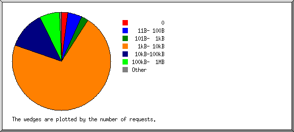
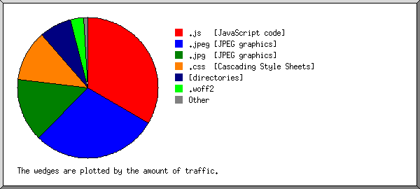

Web Server Statistics for iwra.hk
Web Server Statistics for iwra.hk
Program started on Sun, Mar 31 2024 at 5:57 PM.
Analyzed requests from Tue, Feb 20 2024 at 12:03 PM to Sun, Mar 31 2024 at 10:25 AM (39.93 days).
Web Server Statistics for iwra.hkProgram started on Sun, Mar 31 2024 at 5:57 PM.
Analyzed requests from Tue, Feb 20 2024 at 12:03 PM to Sun, Mar 31 2024 at 10:25 AM (39.93 days).
(Go To: Top | General Summary | Monthly Report | Daily Summary | Hourly Summary | Domain Report | Organization Report | Failed Referrer Report | Referring Site Report | Browser Report | Browser Summary | Operating System Report | Status Code Report | File Size Report | File Type Report | Directory Report | Request Report)
Figures in parentheses refer to the 7-day period ending Mar 31 2024 at 5:57 PM.
Successful requests: 405 (19)
Average successful requests per day: 10 (2)
Successful requests for pages: 256 (19)
Average successful requests for pages per day: 6 (2)
Failed requests: 418 (0)
Distinct files requested: 21 (87)
Distinct hosts served: 199 (240)
Data transferred: 8.96 megabytes (53.03 kilobytes)
Average data transferred per day: 229.81 kilobytes (7.58 kilobytes)
(Go To: Top | General Summary | Monthly Report | Daily Summary | Hourly Summary | Domain Report | Organization Report | Failed Referrer Report | Referring Site Report | Browser Report | Browser Summary | Operating System Report | Status Code Report | File Size Report | File Type Report | Directory Report | Request Report)
Each unit ( ) represents 4 requests for pages or part thereof.
) represents 4 requests for pages or part thereof.
| month | #reqs | #pages | |
|---|---|---|---|
| Feb 2024 | 282 | 149 |    |
| Mar 2024 | 123 | 107 |   |
Busiest month: Feb 2024 (149 requests for pages).
(Go To: Top | General Summary | Monthly Report | Daily Summary | Hourly Summary | Domain Report | Organization Report | Failed Referrer Report | Referring Site Report | Browser Report | Browser Summary | Operating System Report | Status Code Report | File Size Report | File Type Report | Directory Report | Request Report)
Each unit () represents 2 requests for pages or part thereof.
| day | #reqs | #pages | |
|---|---|---|---|
| Sun | 43 | 31 | |
| Mon | 28 | 16 | |
| Tue | 111 | 45 | |
| Wed | 69 | 40 | |
| Thu | 82 | 62 | |
| Fri | 30 | 25 | |
| Sat | 42 | 37 | |
(Go To: Top | General Summary | Monthly Report | Daily Summary | Hourly Summary | Domain Report | Organization Report | Failed Referrer Report | Referring Site Report | Browser Report | Browser Summary | Operating System Report | Status Code Report | File Size Report | File Type Report | Directory Report | Request Report)
Each unit () represents 1 request for a page.
| hour | #reqs | #pages | |
|---|---|---|---|
| 0 | 11 | 7 | |
| 1 | 18 | 10 | |
| 2 | 31 | 27 | |
| 3 | 11 | 11 | |
| 4 | 9 | 9 | |
| 5 | 11 | 6 | |
| 6 | 7 | 7 | |
| 7 | 12 | 7 | |
| 8 | 5 | 5 | |
| 9 | 20 | 17 | |
| 10 | 16 | 7 | |
| 11 | 10 | 10 | |
| 12 | 32 | 20 | |
| 13 | 8 | 4 | |
| 14 | 21 | 13 | |
| 15 | 8 | 8 | |
| 16 | 21 | 13 | |
| 17 | 19 | 7 | |
| 18 | 7 | 7 | |
| 19 | 16 | 4 | |
| 20 | 17 | 11 | |
| 21 | 33 | 19 | |
| 22 | 13 | 13 | |
| 23 | 49 | 14 | |
(Go To: Top | General Summary | Monthly Report | Daily Summary | Hourly Summary | Domain Report | Organization Report | Failed Referrer Report | Referring Site Report | Browser Report | Browser Summary | Operating System Report | Status Code Report | File Size Report | File Type Report | Directory Report | Request Report)
Listing domains, sorted by the amount of traffic.
| #reqs | %bytes | domain |
|---|---|---|
| 405 | 100% | [unresolved numerical addresses] |
(Go To: Top | General Summary | Monthly Report | Daily Summary | Hourly Summary | Domain Report | Organization Report | Failed Referrer Report | Referring Site Report | Browser Report | Browser Summary | Operating System Report | Status Code Report | File Size Report | File Type Report | Directory Report | Request Report)

Listing the top 20 organizations by the number of requests, sorted by the number of requests.
| #reqs | %bytes | organization |
|---|---|---|
| 27 | 0.82% | 128.199 |
| 21 | 0.02% | 182.239 |
| 20 | 12.69% | 216.251 |
| 18 | 9.61% | 65.154 |
| 16 | 0.50% | 54 |
| 15 | 6.20% | 51 |
| 13 | 3.39% | 124 |
| 13 | 0.40% | 199.45 |
| 13 | 3.42% | 34 |
| 12 | 6.41% | 14 |
| 11 | 6.38% | 18 |
| 11 | 6.38% | 3 |
| 11 | 4.80% | 35 |
| 11 | 0.33% | 198.235 |
| 10 | 6.53% | 218.103 |
| 9 | 6.26% | 205.169 |
| 9 | 0.27% | 205.210 |
| 7 | 0.21% | 64.15 |
| 7 | 3.23% | 149.56 |
| 7 | 4.61% | 43 |
| 144 | 17.55% | [not listed: 68 organizations] |
(Go To: Top | General Summary | Monthly Report | Daily Summary | Hourly Summary | Domain Report | Organization Report | Failed Referrer Report | Referring Site Report | Browser Report | Browser Summary | Operating System Report | Status Code Report | File Size Report | File Type Report | Directory Report | Request Report)
Listing referring URLs, sorted by the number of failed requests.
| #reqs | URL |
|---|---|
| 5 | http://www.iwra.hk/ |
(Go To: Top | General Summary | Monthly Report | Daily Summary | Hourly Summary | Domain Report | Organization Report | Failed Referrer Report | Referring Site Report | Browser Report | Browser Summary | Operating System Report | Status Code Report | File Size Report | File Type Report | Directory Report | Request Report)

Listing referring sites, sorted by the number of requests.
| #reqs | site |
|---|---|
| 59 | http://iwra.hk/ |
| 36 | http://www.iwra.hk/ |
| 19 | http://mail.iwra.hk/ |
(Go To: Top | General Summary | Monthly Report | Daily Summary | Hourly Summary | Domain Report | Organization Report | Failed Referrer Report | Referring Site Report | Browser Report | Browser Summary | Operating System Report | Status Code Report | File Size Report | File Type Report | Directory Report | Request Report)

Listing the top 40 browsers by the number of requests for pages, sorted by the number of requests for pages.
| #reqs | #pages | browser |
|---|---|---|
| 27 | 27 | Mozilla/5.0 (Windows NT 10.0; Win64; x64) AppleWebKit/537.36 (KHTML, like Gecko) Chrome/89.0.4389.114 Safari/537.36 |
| 16 | 16 | Mozilla/5.0 (X11; Linux x86_64) AppleWebKit/537.36 (KHTML, like Gecko) Chrome/108.0.0.0 Safari/537.36 |
| 16 | 16 | Mozilla/5.0 (Macintosh; Intel Mac OS X 10_15_7) AppleWebKit/537.36 (KHTML, like Gecko) Chrome/121.0.0.0 Safari/537.36 |
| 15 | 15 | Mozilla/5.0 (compatible; CensysInspect/1.1; +https://about.censys.io/) |
| 12 | 12 | Mozilla/5.0 (Windows NT 10.0; Win64; x64) AppleWebKit/537.36 (KHTML, like Gecko) Chrome/123.0.0.0 Safari/537.36 |
| 11 | 11 | Expanse, a Palo Alto Networks company, searches across the global IPv4 space multiple times per day to identify customers' presences on the Internet. If you would like to be excluded from our scans, please send IP addresses/domains to: scaninfo@paloaltonetworks.com |
| 10 | 10 | Mozilla/5.0 (X11; Linux x86_64) AppleWebKit/537.36 (KHTML, like Gecko) Chrome/83.0.4103.97 Safari/537.36 |
| 8 | 8 | Mozilla/5.0 \\(Windows NT 10.0\\; Win64\\; x64\\) AppleWebKit/537.36 \\(KHTML, like Gecko\\) Chrome/100.0.4896.60 Safari/537.36 |
| 8 | 8 | Mozilla/5.0 (Macintosh; Intel Mac OS X 10_15_7) AppleWebKit/537.36 (KHTML, like Gecko) Chrome/107.0.0.0 Safari/537.36 |
| 6 | 6 | Mozilla/5.0 (Linux; Android 6.0; Nexus 5 Build/MRA58N) AppleWebKit/537.36 (KHTML, like Gecko) Chrome/81.0.4044.138 Mobile Safari/537.36 |
| 6 | 6 | Mozilla/5.0 (Windows NT 10.0; Win64; x64) AppleWebKit/537.36 (KHTML, like Gecko) Chrome/95.0.4638.69 Safari/537.36 |
| 5 | 5 | Mozilla/5.0 (compatible; InternetMeasurement/1.0; +https://internet-measurement.com/) |
| 4 | 4 | python-requests/2.31.0 |
| 12 | 4 | Mozilla/5.0 (Windows NT 10.0; Win64; x64) AppleWebKit/537.36 (KHTML, like Gecko) Chrome/121.0.0.0 Safari/537.36 Edg/121.0.0.0 |
| 20 | 4 | Mozilla/5.0 (X11; Linux x86_64) AppleWebKit/537.36 (KHTML, like Gecko) HeadlessChrome/110.0.5481.100 Safari/537.36 |
| 3 | 3 | Mozilla/5.0 (Macintosh; U; Intel Mac OS X 10_6_4; en-US) AppleWebKit/534.1 (KHTML, like Gecko) Chrome/104.0.0.0 Safari/534.1 |
| 3 | 3 | Mozilla/5.0 (Linux; Android 10; SM-G981B) AppleWebKit/537.36 (KHTML, like Gecko) Chrome/80.0.3987.162 Mobile Safari/537.36 |
| 3 | 3 | Mozilla/5.0 (Windows NT 10.0; Win64; x64) AppleWebKit/537.36 (KHTML, like Gecko) Chrome/94.0.4606.61 Safari/537.36 |
| 3 | 3 | Mozilla/5.0 (X11; Ubuntu; Linux x86_64; rv:109.0) Gecko/20100101 Firefox/115.0 |
| 15 | 3 | Mozilla/5.0 (iPhone; CPU iPhone OS 17_2_1 like Mac OS X) AppleWebKit/605.1.15 (KHTML, like Gecko) Version/17.2 Mobile/15E148 Safari/604.1 |
| 3 | 3 | curl/7.81.0 |
| 3 | 3 | Mozilla/5.0 (Windows NT 10.0) AppleWebKit/537.36 (KHTML, like Gecko) Chrome/106.0.0.0 Safari/537.36 |
| 6 | 3 | Mozilla/5.0 (Windows NT 10.0; Win64; x64) AppleWebKit/537.36 (KHTML, like Gecko) Chrome/92.0.4515.107 Safari/537.36 |
| 15 | 3 | Mozilla/5.0 (Windows NT 10.0; Win64; x64) AppleWebKit/537.36 (KHTML, like Gecko) Chrome/117.0.5938.132 Safari/537.36 |
| 3 | 3 | Mozilla/5.0 (Windows NT 10.0; Win64; x64) AppleWebKit/537.36 (KHTML, like Gecko) Chrome/112.0.0.0 Safari/537.36 |
| 2 | 2 | Mozilla/5.0 (Macintosh; Intel Mac OS X 10_15_5) AppleWebKit/605.1.15 (KHTML, like Gecko) Version/13.1.1 Safari/605.1.15 (Applebot/0.1; +http://www.apple.com/go/applebot) |
| 2 | 2 | Mozilla/5.0 (Windows NT 10.0; Win64; x64) AppleWebKit/537.36 (KHTML, like Gecko) Chrome/63.0.3239.132 Safari/537.36 |
| 7 | 2 | Mozilla/5.0 (X11; Linux x86_64) AppleWebKit/537.36 (KHTML, like Gecko) HeadlessChrome/122.0.6261.94 Safari/537.36 |
| 2 | 2 | curl/7.29.0 |
| 2 | 2 | Mozilla/5.0 (X11; Linux x86_64) AppleWebKit/537.36 (KHTML, like Gecko) Chrome/120.0.0.0 Safari/537.36 |
| 6 | 2 | Mozilla/5.0 (compatible; Dataprovider.com) |
| 2 | 2 | Mozilla/5.0 (Macintosh; Intel Mac OS X 13_0_1) AppleWebKit/537.36 (KHTML, like Gecko) Chrome/108.0.0.0 Safari/537.36 |
| 6 | 2 | CheckMarkNetwork/1.0 (+http://www.checkmarknetwork.com/spider.html) |
| 2 | 2 | Go-http-client/1.1 |
| 2 | 2 | Mozilla/5.0 (Linux; Android 6.0; HTC One M9 Build/MRA133952) AppleWebKit/537.36 (KHTML, like Gecko) Chrome/52.0.3069.98 Mobile Safari/537.3 |
| 10 | 2 | Mozilla/5.0 (iPhone; CPU iPhone OS 12_2 like Mac OS X) AppleWebKit/605.1.15 (KHTML, like Gecko) Mobile/15E148 |
| 10 | 2 | Mozilla/5.0 (Windows NT 10.0; Win64; x64) AppleWebKit/537.36 (KHTML, like Gecko) Chrome/103.0.5060.66 Safari/537.36 Edg/103.0.1264.44 |
| 1 | 1 | Mozilla/5.0 (Macintosh; Intel Mac OS X 8_2_1) AppleWebKit/566.50 (KHTML, like Gecko) Chrome/69.0.2658 Safari/537.36 |
| 1 | 1 | Mozilla/5.0 (Macintosh; Intel Mac OS X 10.14; rv:82.0) Gecko/20100101 Firefox/82.0 |
| 1 | 1 | Mozilla/5.0 (Linux x86_64; rv:89.0) Gecko/20100101 Firefox/89.0 |
| 104 | 35 | [not listed: 41 browsers] |
(Go To: Top | General Summary | Monthly Report | Daily Summary | Hourly Summary | Domain Report | Organization Report | Failed Referrer Report | Referring Site Report | Browser Report | Browser Summary | Operating System Report | Status Code Report | File Size Report | File Type Report | Directory Report | Request Report)

Listing browsers with at least 1 request for a page, sorted by the number of requests for pages.
| # | #reqs | #pages | browser |
|---|---|---|---|
| 1 | 279 | 179 | Safari |
| 248 | 168 | Safari/537 | |
| 20 | 4 | Safari/604 | |
| 7 | 3 | Safari/605 | |
| 3 | 3 | Safari/534 | |
| 1 | 1 | Safari/4E423F | |
| 2 | 28 | 24 | Netscape (compatible) |
| 3 | 13 | 12 | Firefox |
| 3 | 3 | Firefox/115 | |
| 2 | 2 | Firefox/52 | |
| 1 | 1 | Firefox/98 | |
| 1 | 1 | Firefox/89 | |
| 1 | 1 | Firefox/5 | |
| 1 | 1 | Firefox/60 | |
| 1 | 1 | Firefox/82 | |
| 1 | 1 | Firefox/119 | |
| 1 | 1 | Firefox/49 | |
| 4 | 11 | 11 | Expanse, a Palo Alto Networks company, searches across the global IPv4 space multiple times per day to identify customers' presences on the Internet. If you would like to be excluded from our scans, please send IP addresses |
| 11 | 11 | Expanse, a Palo Alto Networks company, searches across the global IPv4 space multiple times per day to identify customers' presences on the Internet. If you would like to be excluded from our scans, please send IP addresses/domains | |
| 5 | 5 | 5 | curl |
| 5 | 5 | curl/7 | |
| 6 | 12 | 4 | Mozilla |
| 7 | 10 | 4 | python-requests |
| 10 | 4 | python-requests/2 | |
| 8 | 6 | 2 | CheckMarkNetwork |
| 6 | 2 | CheckMarkNetwork/1 | |
| 9 | 2 | 2 | Go-http-client |
| 2 | 2 | Go-http-client/1 | |
| 10 | 1 | 1 | Python |
| 1 | 1 | Python/3 | |
| 26 | 0 | [not listed: 3 browsers] |
(Go To: Top | General Summary | Monthly Report | Daily Summary | Hourly Summary | Domain Report | Organization Report | Failed Referrer Report | Referring Site Report | Browser Report | Browser Summary | Operating System Report | Status Code Report | File Size Report | File Type Report | Directory Report | Request Report)

Listing operating systems, sorted by the number of requests for pages.
| # | #reqs | #pages | OS |
|---|---|---|---|
| 1 | 134 | 89 | Windows |
| 120 | 84 | Windows NT | |
| 14 | 5 | Unknown Windows | |
| 2 | 100 | 62 | Unix |
| 99 | 61 | Linux | |
| 1 | 1 | BSD | |
| 3 | 81 | 47 | OS unknown |
| 4 | 72 | 44 | Macintosh |
| 5 | 6 | 2 | Known robots |
(Go To: Top | General Summary | Monthly Report | Daily Summary | Hourly Summary | Domain Report | Organization Report | Failed Referrer Report | Referring Site Report | Browser Report | Browser Summary | Operating System Report | Status Code Report | File Size Report | File Type Report | Directory Report | Request Report)

Listing status codes, sorted numerically.
| #reqs | status code |
|---|---|
| 395 | 200 OK |
| 1 | 206 Partial content |
| 9 | 304 Not modified since last retrieval |
| 418 | 404 Document not found |
(Go To: Top | General Summary | Monthly Report | Daily Summary | Hourly Summary | Domain Report | Organization Report | Failed Referrer Report | Referring Site Report | Browser Report | Browser Summary | Operating System Report | Status Code Report | File Size Report | File Type Report | Directory Report | Request Report)

| size | #reqs | %bytes |
|---|---|---|
| 0 | 17 | |
| 1B- 10B | 1 | |
| 11B- 100B | 24 | 0.02% |
| 101B- 1kB | 0 | |
| 1kB- 10kB | 301 | 10.89% |
| 10kB-100kB | 3 | 0.55% |
| 100kB- 1MB | 59 | 88.54% |
(Go To: Top | General Summary | Monthly Report | Daily Summary | Hourly Summary | Domain Report | Organization Report | Failed Referrer Report | Referring Site Report | Browser Report | Browser Summary | Operating System Report | Status Code Report | File Size Report | File Type Report | Directory Report | Request Report)

Listing extensions with at least 0.1% of the traffic, sorted by the amount of traffic.
| #reqs | %bytes | extension |
|---|---|---|
| 71 | 50.29% | .js [JavaScript code] |
| 28 | 39.74% | .jpg [JPEG graphics] |
| 256 | 7.51% | [directories] |
| 26 | 2.44% | .png [PNG graphics] |
| 24 | 0.02% | [not listed: 1 extension] |
(Go To: Top | General Summary | Monthly Report | Daily Summary | Hourly Summary | Domain Report | Organization Report | Failed Referrer Report | Referring Site Report | Browser Report | Browser Summary | Operating System Report | Status Code Report | File Size Report | File Type Report | Directory Report | Request Report)

Listing directories with at least 0.01% of the traffic, sorted by the amount of traffic.
| #reqs | %bytes | directory |
|---|---|---|
| 381 | 99.98% | [root directory] |
| 24 | 0.02% | /.well-known/ |
(Go To: Top | General Summary | Monthly Report | Daily Summary | Hourly Summary | Domain Report | Organization Report | Failed Referrer Report | Referring Site Report | Browser Report | Browser Summary | Operating System Report | Status Code Report | File Size Report | File Type Report | Directory Report | Request Report)

Listing files with at least 20 requests, sorted by the number of requests.
| #reqs | %bytes | last time | file |
|---|---|---|---|
| 256 | 7.51% | Mar/31/24 10:25 AM | / |
| 18 | 0.55% | Mar/27/24 10:52 PM | /?167.248.133.182 |
| 17 | 0.46% | Mar/30/24 8:23 PM | /?45.90.63.164 |
| 36 | 48.80% | Mar/20/24 9:29 PM | /jquery2.0.3.js |
| 35 | 1.49% | Mar/20/24 9:29 PM | /backstretch.js |
| 28 | 39.74% | Mar/13/24 2:05 AM | /construction-bg.jpg |
| 21 | 1.89% | Mar/13/24 2:05 AM | /website-coming-soon-blank.png |
| 29 | 0.57% | Feb/22/24 10:14 AM | [not listed: 10 files] |